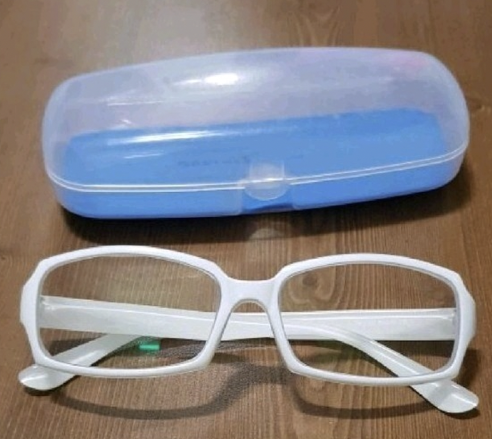

중학교 무렵 "하얀안경"에게 권위에 도전하다가 "하얀안경"의 진심 연속 펀치를 맞았고 이에 김동석은 큰 부상을 입었고 친우가 망가진 모습을 본 여파로 "하얀안경"은 그 후로 폭력이란 수단을 봉인하게 되었고 경주 일대의 강력범죄는 크게 줄었다.

고등학교 무렵 그는 본인이 속칭 인싸라는 존재인줄 알았다. 그래서 무모하면서도 무지하게도 전교회장에 출마하게된다. 에너지 보존의 법칙에 의해서인지 그의 열정이 뜨거울수록 주변의 반응은 차가워졌다. 투표결과 결과 속칭 인싸에게 잡아먹히게 되었 고 잡아 먹힌것이 그의 자존심이었는지 허영심이었는지는 아직 확인된바가 없다.
속칭 새터사건이라고 불리운다. 이 사건은 그의 친우들과의 해외여행 선약보다 뒤늦게 잡힌 대학교 신입생 이벤트를 더 중요하게 생각한다는걸 들키게 된 중요한 사건이다. 이걸 계기로 회장선거 출마사건으로 그가 잃은건 허영심이 아니라는것은 확정되게 된다. 그 당시 풀멤버를 원했던 친우들은 해외여행을 가지 않는다고 선언하였으며 하츠동만이 필자와 함께 떠나게 되었다.
그는 새터 사건으로 하나의 직책을 얻게 되는데 그것이 바로 과대이다. 고등학교때 선망했던 왕좌는 아니였으나 그는 왕의 책임 보다는 옆의 사람보다 높은곳에 있는 의자에 앉고 싶었을뿐이었다. 그런 그가 이런 자리를 거절할리가 없었으며 과대를 맡게 된다. 그래도 그는 과대를 하면서 연애을 성공시키며 우정보다는 사랑이라는 격언을 몸소 실행할 기회를 얻게된다.
문과생이었던 그는 컨텐츠쪽에 자연스럽게 눈을 돌리게 되었고 자신있게 youtube시장에 뛰어들게 된다. 그곳에는 자신의 일상이나 자신만만하게 기획한 컨텐츠(알바비만큼 전국을 여행한다고하는 컨텐츠)를 투고하였다. 그는 이걸 계기로 영상편집이나 자기가 하고싶었던 일에 대해서 배울수 있는 기회였으며 시에서 일을 따내는등 좋은면들이 많았으나 일각에서는 컨텐츠가 아니라 본인 연애한거 리는곳이 아니냐는둥 날먹이라는 둥 이런말이 나오고는 했다. 물론 구독자수는 하꼬이다. 구독자수가 궁금하면 그의 작업장링크를 클릭해보자.